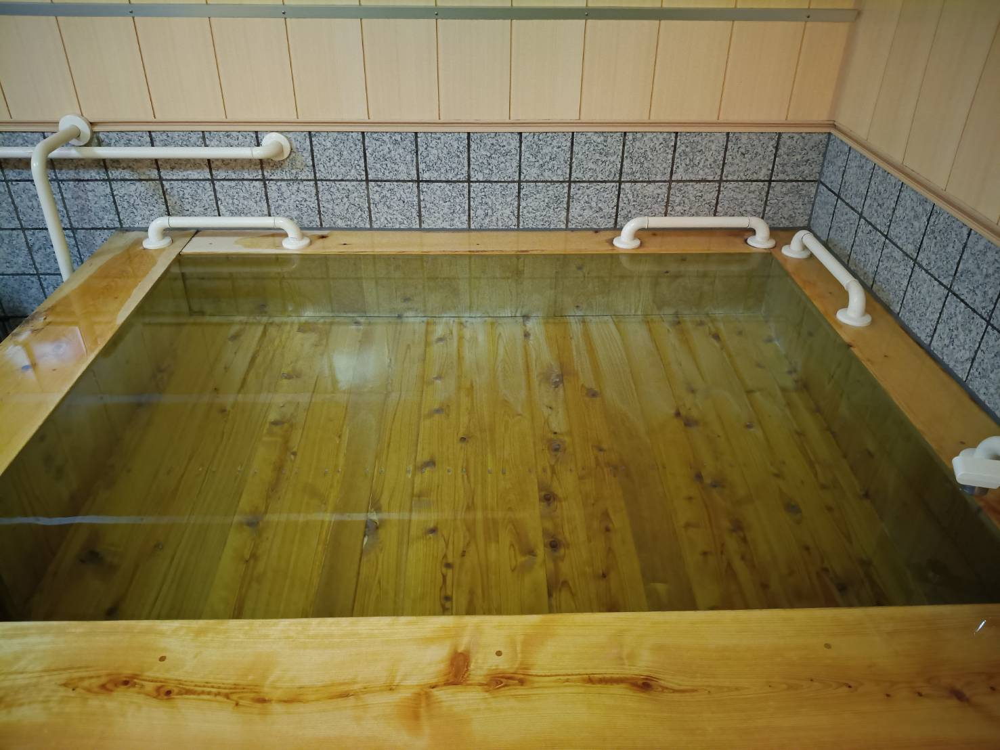
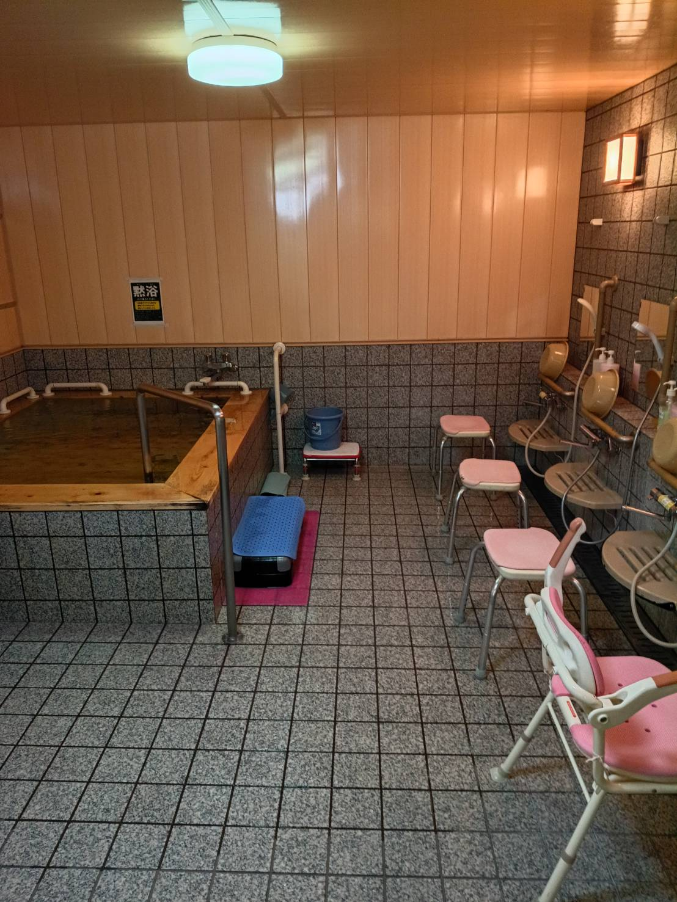
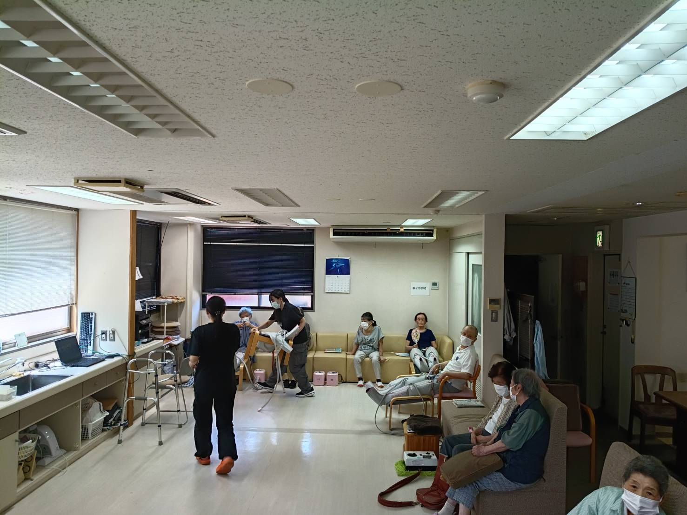
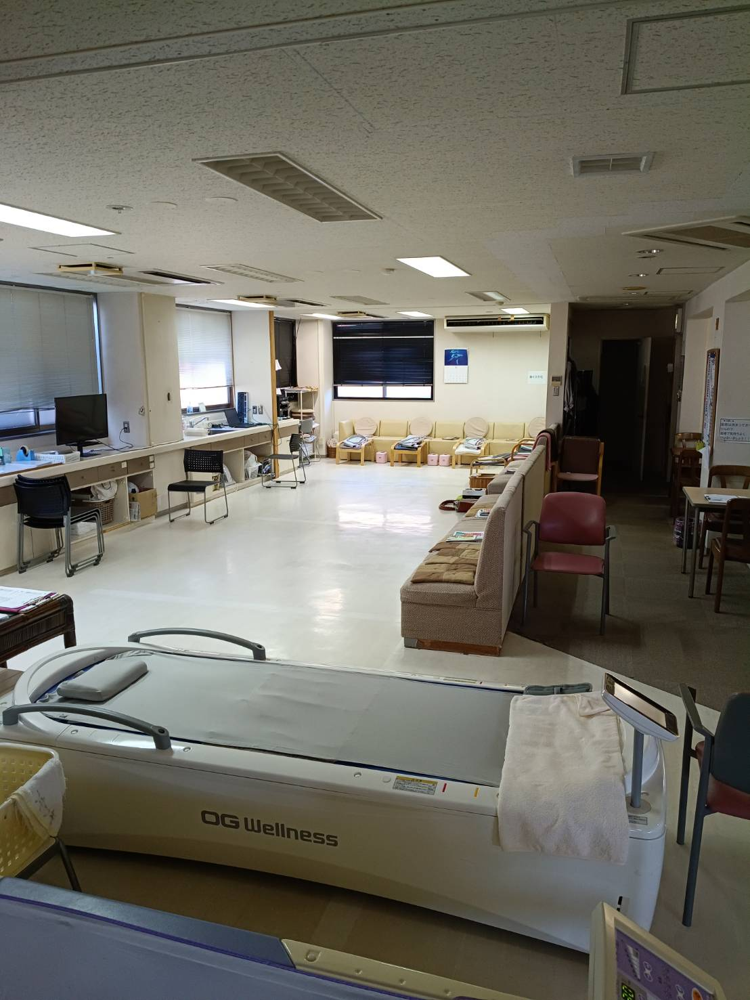

お風呂を一番に考えたい方
- 自宅での入浴が難しくなってきた
- 自宅のお風呂掃除が負担になっている
- 大きなお風呂で気分転換したい
自宅での入浴が難しくなった方も、ひのきの大浴場でゆったりと。無理のない体操も組み合わせ、清潔と身体機能を保ちながら在宅生活の継続を支えます。

二口店は、お風呂を中心に通い方を考えたい方と、入浴に加えて予防程度の運動を続けたい方に合う事業所です。
上記のような入浴の希望に加えて、要支援の方など、予防程度の無理のない運動を継続したい方も歓迎します。
二口店は1階だけのデイサービスです。フロアを分けて移動するのではなく、入浴、無理のない体操、休息を同じ一日の中で組み合わせます。
安心してお風呂に入り、清潔を保つ。体操で身体機能の維持を目指す。二口店らしさを、この一つの四角にまとめました。
図は間取りではなく、二口店での過ごし方を表しています。

他店にはない、ひのきを使った大浴場が二口店の大きな特徴です。自宅での入浴や風呂掃除が負担になってきた方も、通う日の予定にお風呂を組み込めます。要支援の方で入浴をご希望の方も歓迎します。
契約書に記載された機能訓練を土台に、体力やその日の状態を見ながら内容を調整します。

ストレッチ体操、トレーニングマシン、歩行訓練などを行います。筋力の維持・強化や関節を動かすことを意識し、本人の希望や体力に合わせます。

体を動かした後は、リラクゼーションを取り入れながらひと息つけます。運動だけを続けるのではなく、無理なく次へつながる過ごし方を組みます。
※顔が写る写真は確認用の仮配置です。公開前に必要な加工と掲載確認を行います。
サービス提供時間は9時30分から14時30分です。入浴や活動の順番は、当日の状況により変わります。
二口店が更新するスプレッドシートから、曜日ごとの施設とお風呂の空きを表示します。利用開始日は電話で最終確認をお願いします。
| 曜日 | 施設の空き | お風呂の空き |
|---|
通常の提供時間に合う「5時間以上6時間未満」を選択済みです。条件を変えると月額の概算を確認できます。
| 事業所名 | プラトーケアセンターシルバーフィットネス二口店 |
|---|---|
| 営業日 | 月曜日〜土曜日 |
| 営業時間 | 8:00〜17:00 |
| 提供時間 | 9:30〜14:30 |
| 通常の実施地域 | 金沢市 |
| 所在地 | 石川県金沢市二口町ハ28番地1 |
2026年6月版の重要事項説明書・契約書をもとに記載しています。
空き状況や利用条件も、お電話で確認できます。